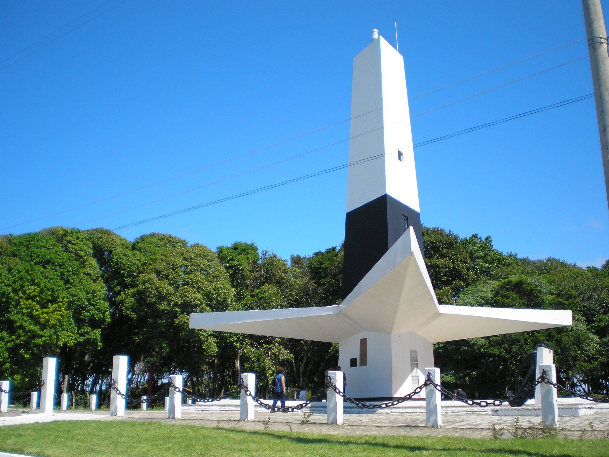
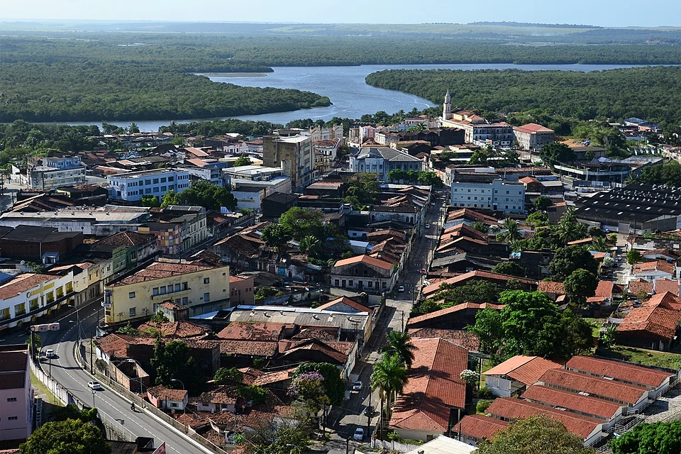
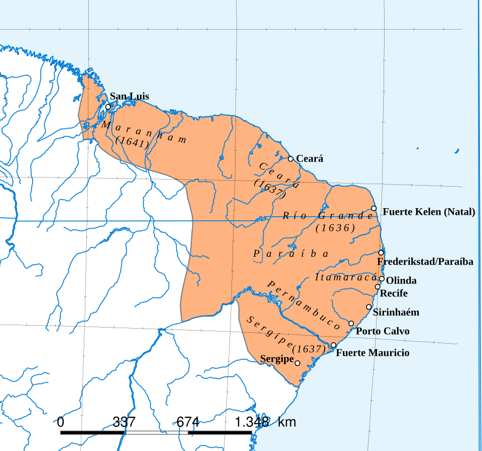

1. Farol do Cabo Branco
Emblemático monumento em formato triangular situado sobre as falésias.
Pesquisar rotasOnde o sol nasce primeiro nas Américas. Descubra a rica herança barroca, o urbanismo sustentável e os encantos que tornam a capital paraibana um dos melhores lugares para viver e visitar.



A terceira cidade mais antiga do Brasil possui uma trajetória fascinante marcada por conflitos coloniais, mudanças sucessivas de nome, o apogeu da economia açucareira, o domínio estrangeiro e o forte desenvolvimento científico e turístico contemporâneo.
Caso queira saber sobre a história de maneira mais profunda, clique aqui.
Explore os 12 principais cartões-postais de João Pessoa navegando pelo carrossel abaixo ou conferindo a grade completa de atrações.
Emblemático monumento em formato triangular situado sobre as falésias.
Pesquisar rotasComplexo de difusão científica e cultural assinado por Oscar Niemeyer.
Pesquisar rotasReserva de Mata Atlântica urbana ideal para educação ambiental e trilhas.
Pesquisar rotasModerno complexo multiuso voltado a grandes eventos com vista para o mar.
Pesquisar rotasHistórico parque central circundado por palmeiras imperiais e projeto de Burle Marx.
Pesquisar rotasMonumento turístico à beira-mar na Praia de Tambaú celebrando a capital.
Pesquisar rotasTradicional parque zoobotânico municipal repleto de fontes de água mineral.
Pesquisar rotasFormações recifais cristalinas localizadas em frente à Praia dos Seixas.
Pesquisar rotasCorais acessados por catamarãs na maré baixa em frente à Praia de Tambaú.
Pesquisar rotasJoia máxima do barroco brasileiro com altares revestidos inteiramente em ouro.
Pesquisar rotasMirante elevado com vista panorâmica deslumbrante para o litoral.
Pesquisar rotasFamoso calçadão litorâneo perfeito para caminhadas, cooper e ciclismo.
Pesquisar rotasA combinação de economia, sustentabilidade, excelente qualidade de vida e projeção internacional faz da capital paraibana o destino ideal.
Moradia, transporte e alimentação com valores bem abaixo da média nacional em comparação direta aos grandes centros do Sudeste.
Fonte: Correio BrazilienseReconhecida internacionalmente pela FAO/ONU (Tree Cities of the World) com rica cobertura vegetal e parques lineares.
Fonte: FAO/ONULiderança regional no Índice de Progresso Social (IPS Brasil), avaliando o bem-estar e posicionando a capital no top nacional.
Fonte: IPS BrasilSucesso internacional em alta demanda de viagens, com o Aeroporto Castro Pinto batendo recordes históricos de fluxo.
Fonte: Booking.com / AenaDo Centro Histórico às praias, tudo fica a poucos minutos. Utilize o mapa integrado ou clique nas categorias abaixo para atualizar o mapa na própria página:
Tem alguma dúvida sobre turismo, história ou deseja enviar uma sugestão? Preencha o formulário abaixo.
Acesse o portal oficial da cidade para serviços, portais de transparência e notícias:
Site da PrefeituraAcompanhe nas redes sociais: